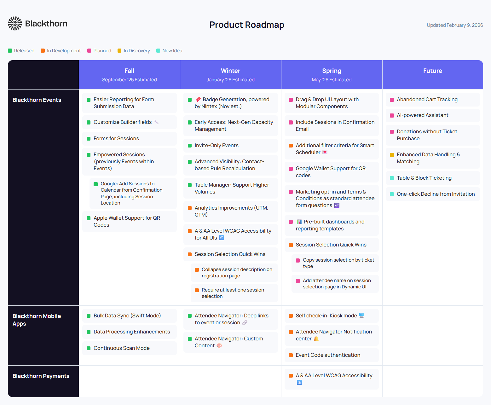

Zero-Cost Public Roadmap
Replacing a deprecated vendor tool in under a day using Claude Code.
Stack: Claude Code · Google Sheets · HTML/CSS/JS · GitHub Pages
Timeline: Idea to production in <1 day

The Problem
The product team was changing our customer feedback platform. The new solution did not include public roadmap functionality. The company had always maintained a public roadmap that was heavily used as a reference by sales, customer success, and support teams.
The previous solution had multiple problems:
- It was not brand-compliant
- It didn't iframe well on our site, so team members would often share the direct vendor URL instead of the official company URL
- Updating it created friction because it required a significant context switch for product team members
The Requirements
Any replacement needed to meet all of the following:
- Easily editable and publishable by anyone on the product team
- Brand-compliant look and feel
- Work well on mobile devices
- Correctly iframe on a Salesforce Community site
- Zero additional cost
The obvious options were to procure a new SaaS tool (cost + procurement time) or request an internal engineering build (time + capacity). Both had tradeoffs. I saw an opportunity to solve it myself.
What I Did
I took the initiative to build a solution myself using Claude Code, leveraging existing tools and processes to reduce friction for the product team.
- Data source: Built the solution to run entirely off a Google Sheet accessible to the entire product team. No new tools, no context switching.
- Brand alignment: Gave Claude Code our brand guidelines and it created a page template in alignment with our brand, while keeping the same mental model as the original public roadmap
- Iframe solution: Had Claude Code generate a solution for iframing that could communicate with the outer window to correctly render the content on our Salesforce Community site
- Automation: Google Sheets data is automatically pulled into brand-compliant HTML published via GitHub Pages
Total time from idea to deployed solution: less than one day.
The Result
The final solution was a success praised by leadership:
- Scrolling and iframe issues were fixed, making it easier to share the "official" URL with customers
- The product team didn't have to go outside of existing tools to work on the roadmap
- The roadmap was now brand-compliant
- Eliminated the cost of finding and procuring a new third-party solution
What I Learned
AI-assisted coding is a product tool, not just a dev tool. The value here wasn't writing code faster. It was eliminating the procurement process entirely. A PM who can vibe-code a solution in hours changes the decision calculus for the team: instead of "should we buy or build?", the question becomes "can we validate this ourselves before committing resources?"
The best solution isn't always the most technical one. A Google Sheet + static HTML + GitHub Pages is not a sophisticated stack. But it met every requirement, cost nothing, and the product team could maintain it without any engineering support. Simplicity was the feature.
Know when vibe-coding is the right tool. This worked because the scope was narrow, the requirements were clear, and the solution didn't need to scale beyond a single page. For a multi-page app with auth and database needs, the approach would be different. The judgment call is knowing which problems fit.